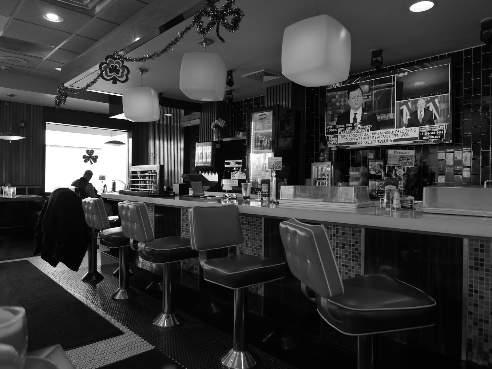
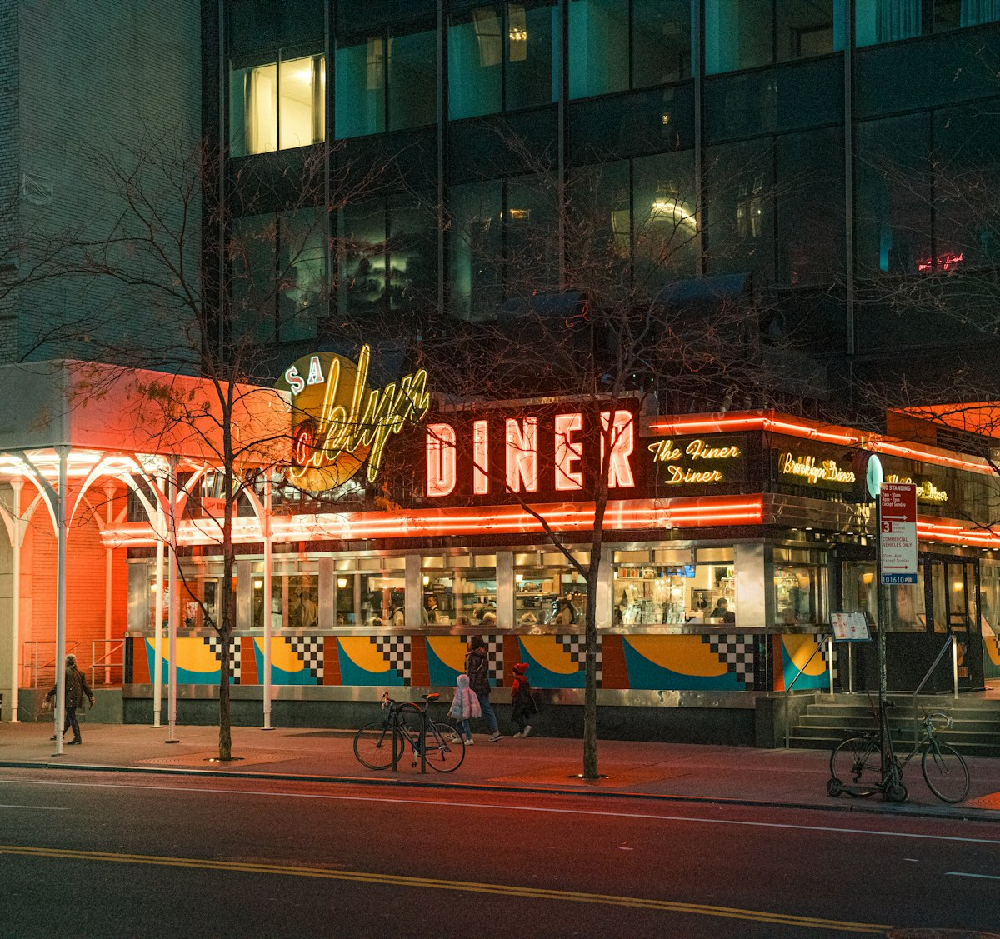
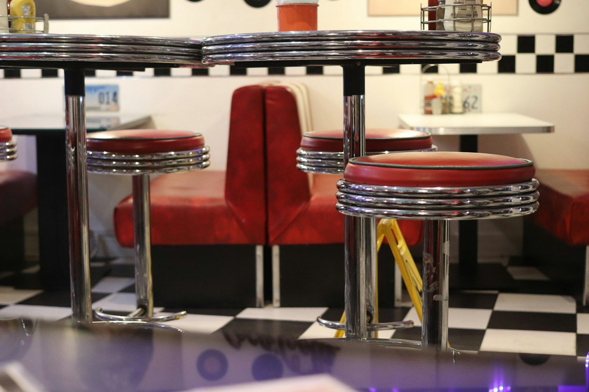
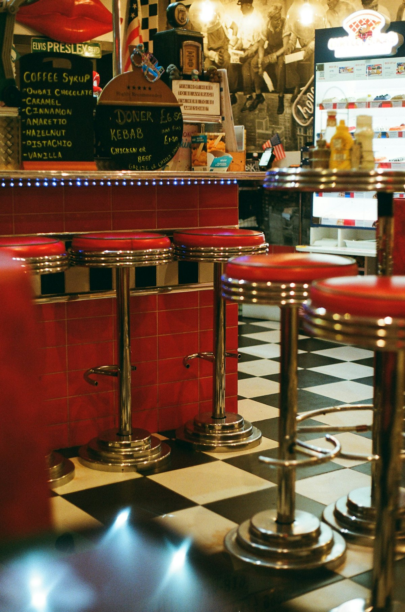
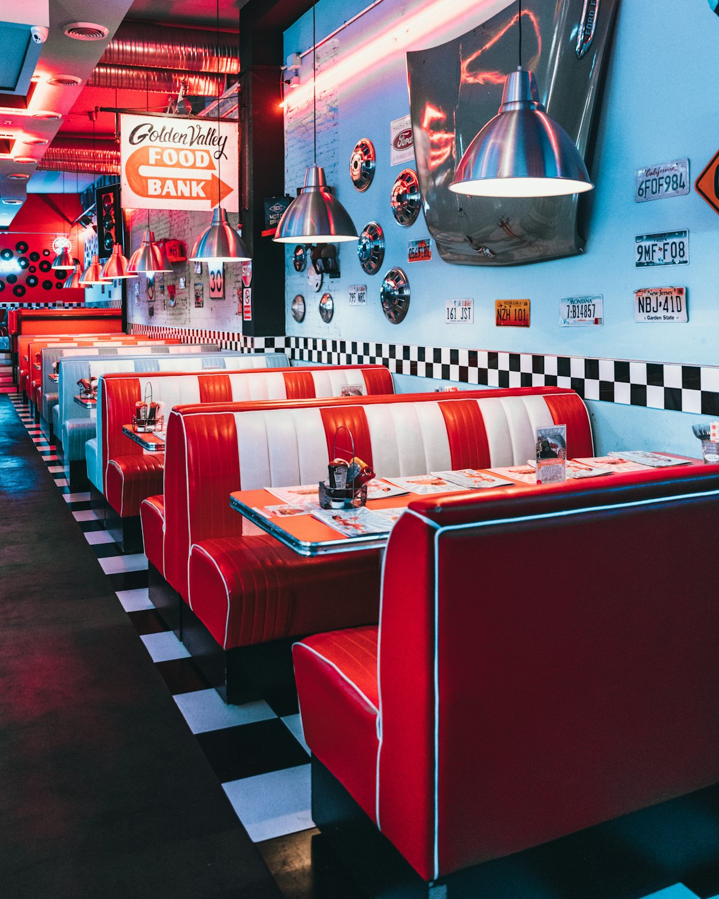
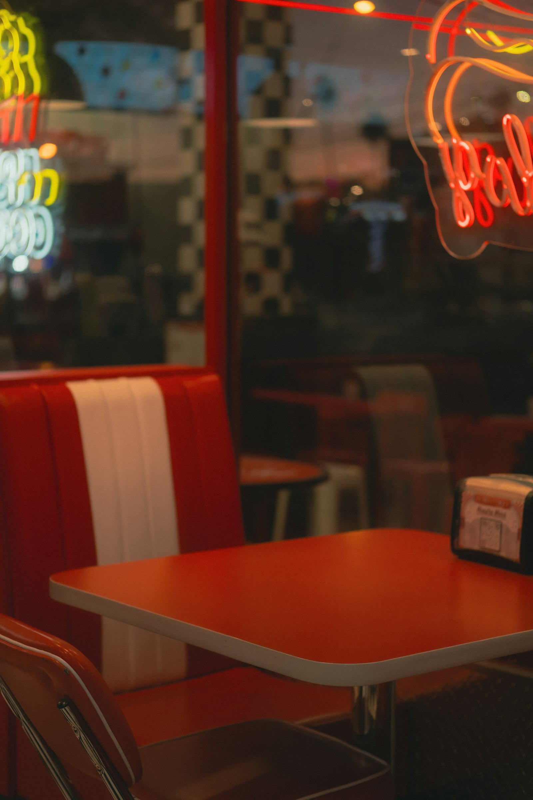
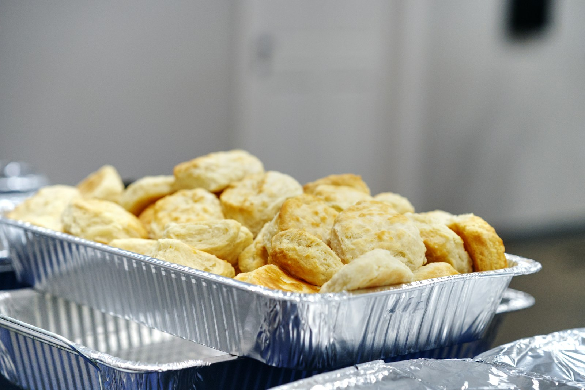
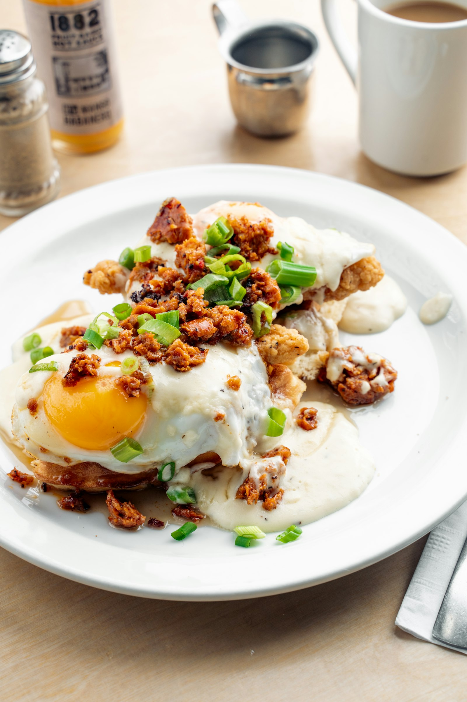
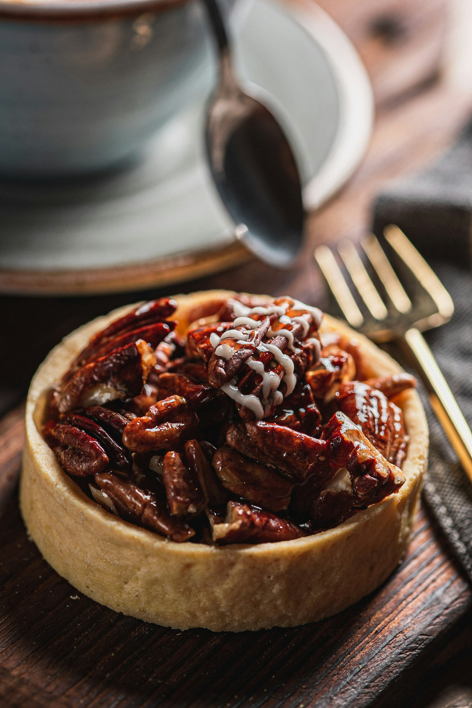
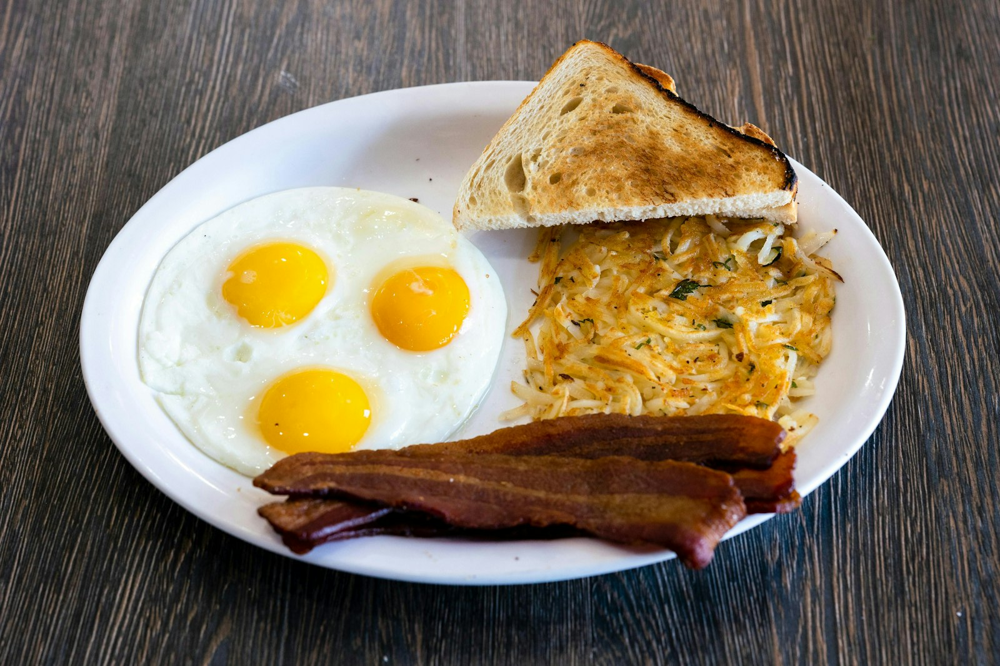

Livermush
A Western North Carolina classic: pork liver, cornmeal and spices, sliced thick and griddled until the edges crisp. Order it with eggs and grits and you'll understand.
Fifty years on Nations Ford Road · Pineville, NC
Our story
A Greek family cooking Southern food on Nations Ford Road since the 1970s, a fire that closed the doors for nearly two years, and a dining room full of people who never found anywhere else they liked as much.

1970s → today
George and Penny Karnezis opened the Kopper Kettle in the 1970s. They cooked the food their neighbors ate — country ham, biscuits, livermush, gravy — and ran the kind of room where the waitress knew your order before you sat down.
Their daughter Sara Karnezis Morris took over in 2014. By then the restaurant had already outlasted most of the chains around it, and the crew had become the kind of people who train the new hire and then retire from the same station twenty years later.
In October 2024 a kitchen fire closed the dining room. It stayed closed for almost two years — long enough that people started to wonder. In 2026 the kettle came back on. Same recipes. Same booths. Same pot of coffee going all morning.
Come see the room
The long version
The parts of the story that matter, in order.
A Greek family takes over a roadside building on Nations Ford Road and starts cooking Southern breakfast for the people who work nearby.
Booths get claimed. The counter fills at 5am. Kids who came in with their grandparents start coming in with their own.
Daughter Sara Karnezis Morris runs the restaurant, keeping the board and the recipes exactly where her parents left them.
A kitchen fire closes the dining room. Charlotte waits — and keeps asking when the biscuits are coming back.
Doors open again. Same booths, same crew, same coffee. The line starts before sunrise, just like it used to.
CharlotteFive Readers' Choice, 4.4 on Yelp, 98% recommend on Facebook — and a dining room that still looks like 1975 in the best way.
Diner words
A short glossary of the things on the board, the things the regulars say, and the things you should absolutely order.
A Western North Carolina classic: pork liver, cornmeal and spices, sliced thick and griddled until the edges crisp. Order it with eggs and grits and you'll understand.
One meat, three vegetables, usually a roll or cornbread. The old Southern lunch format — here it's meatloaf, roast beef or country fried steak with whatever's on the stove.
Biscuits spooned onto the pan instead of rolled and cut — craggy, buttery edges, more crust. The cinnamon pecan version is the reason to skip the toast.
Country ham drippings, coffee and a little water, cooked down in the pan. Spoons over biscuits and grits; ask for it if you order the country ham.
The daily special, named for the divided plates diners used to serve it on. Ask what's on the blue plate before you even open the menu.
Coffee. Your cup gets refilled until you put your hand over it, and sometimes after that. It's part of the price and part of the service.
Brewed strong, sweetened while hot, poured over ice. If you order “tea” in a Southern diner, this is what arrives unless you say otherwise.
Solo diners sit here. You get the grill show, the cook's opinion, and a refill without asking. Best seat in the house at 5:30am.
Not just polite — it's the business model. Half the room has been coming for thirty years, and the other half is about to start.
The room & the plates
Red vinyl, chrome, checkered tile, and food that fills the plate. Hover for the captions.









The regulars
Reviews from people who've been eating here longer than some of the staff have been alive.
“I can remember my grandmother taking me here when I was just a child, over 30 years ago. Basic home cooked country breakfast.”
“Fancy it is not, but home style it is. Cooked fresh and hot and served by friendly folks who kept my tea glass full.”
“This diner has a friendly hometown feel… I had the most delicious fries I've ever tasted.”
Mon–Fri 5:00 am – 2:30 pm · Saturday 5:00 – 11:30 am · Closed Sunday